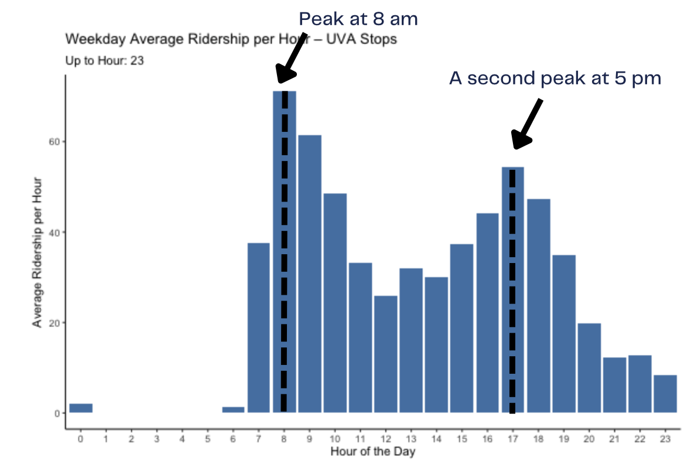
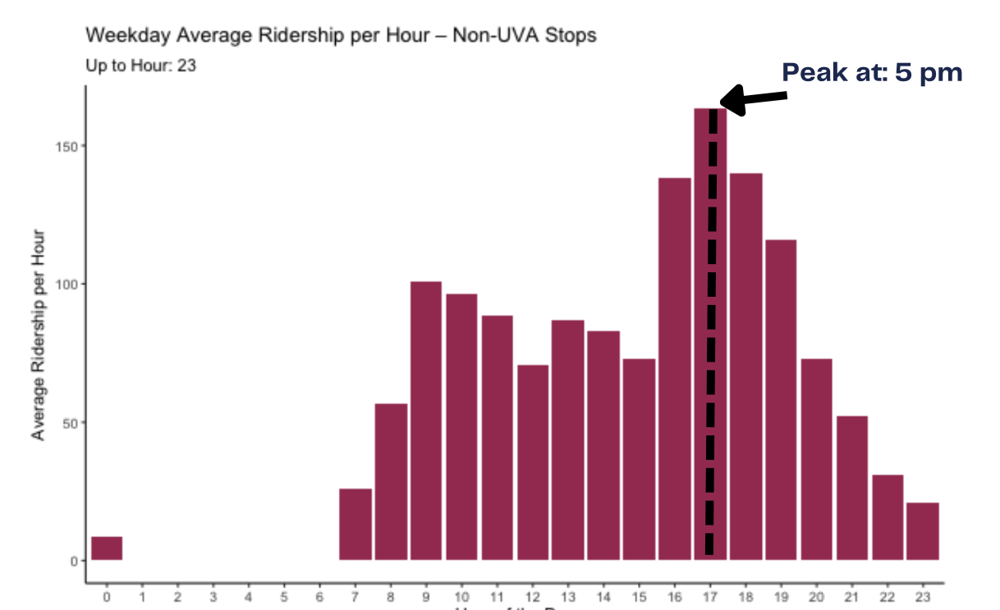
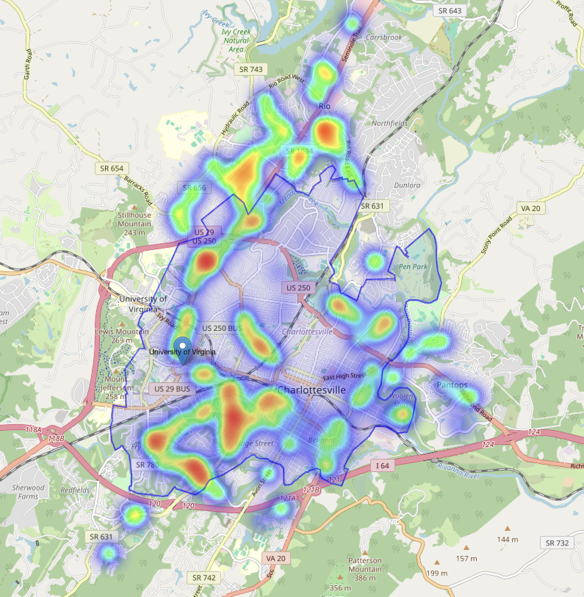

This research investigates the difference in bus ridership between UVA-affiliated and non-UVA-affiliated buses in Charlottesville using data from the City of Charlottesville Open Data portal.
Heat Map
This heat map displays the coverage of the UVA bus ridership in Charlottesville.
Research Questions on the busiest hour and the busiest area
To better understand rider behavior, we compare the two histograms in terms of distribution and spread.
For coverage analysis of the bus system relative to regional developments, we compare the heat map with the poverty condition map of Charlottesville.


Busiest Hour
The comparison between the two ridership patterns suggests that UVA and non-UVA bus passengers exhibit distinctly different riding behaviors.
For UVA passengers—mostly students—the bus peak is around 8 am, coinciding with class times, with a secondary peak at 5 pm.
Non-UVA riders, predominantly commuters, peak at 5 pm, indicating a post-work travel pattern.

Busiest Area
The map reveals that the UVA campus and downtown corridor serve as major transit hubs.
However, neighborhoods such as Woolen Mills, Ridge Street, and Belmont appear under-served.
This disparity highlights significant differences in transit accessibility across Charlottesville.
A developed country is not a place where the poor have cars. It's where the rich use public transportation.


 A developed country is not a place where the poor have cars. It's where the rich use public transportation.
A developed country is not a place where the poor have cars. It's where the rich use public transportation.